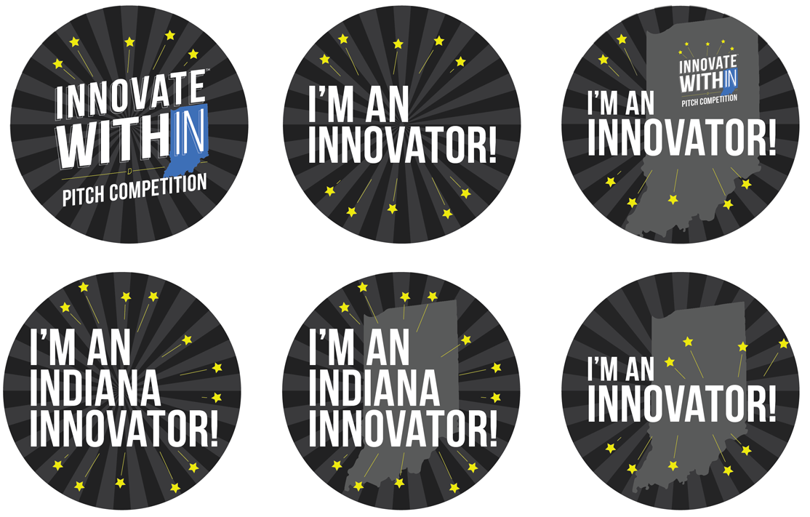
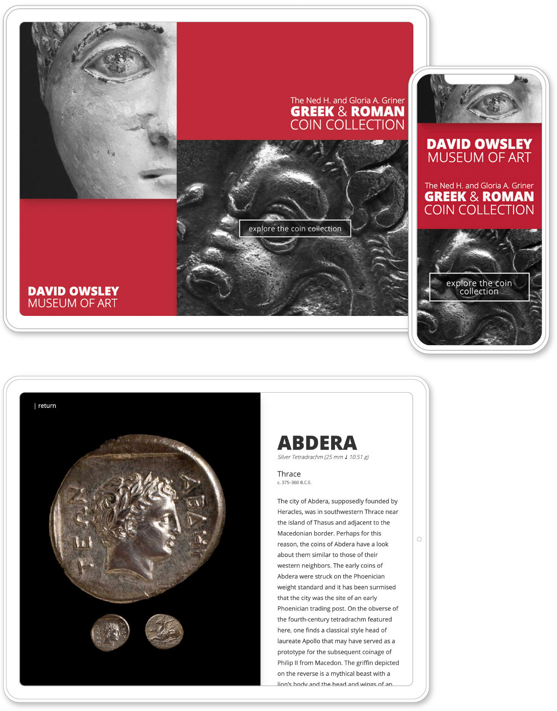
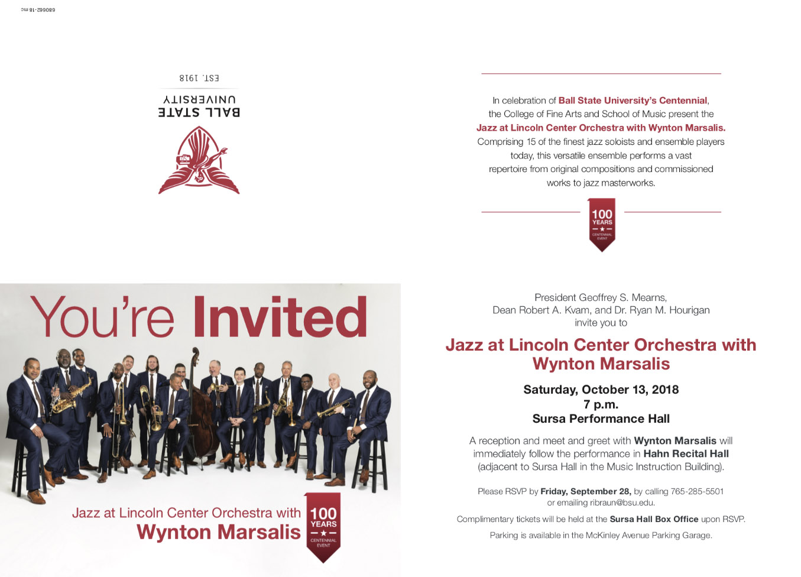
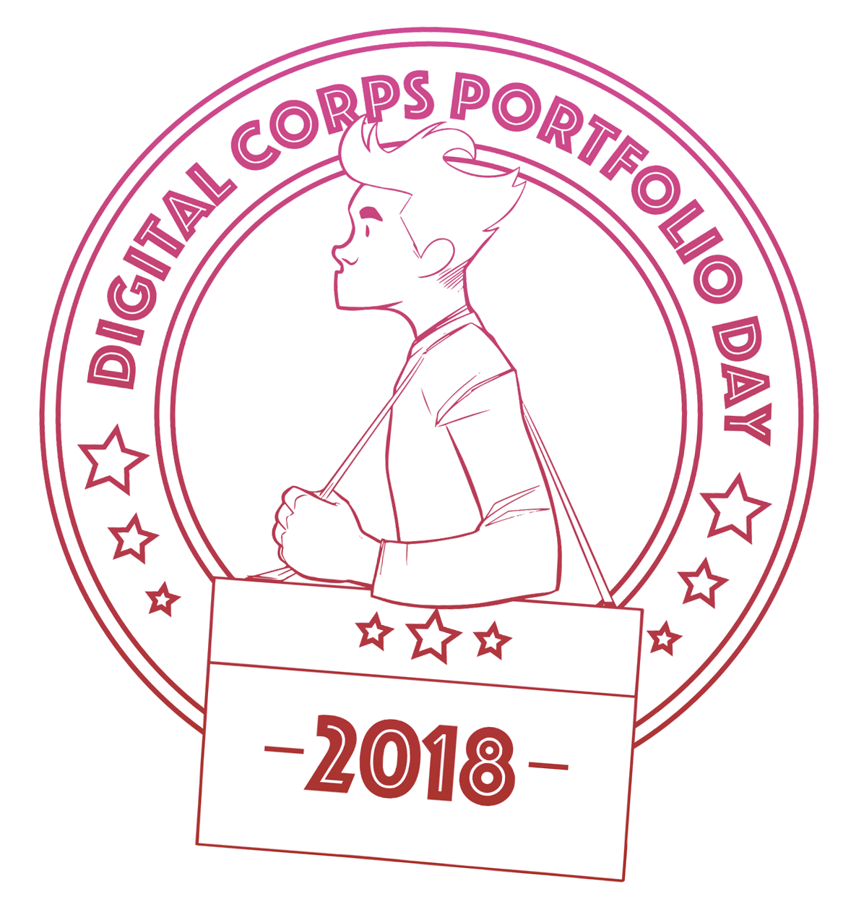
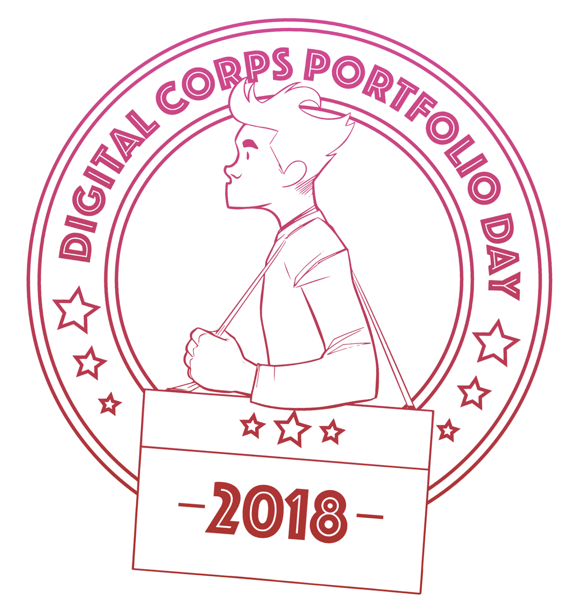
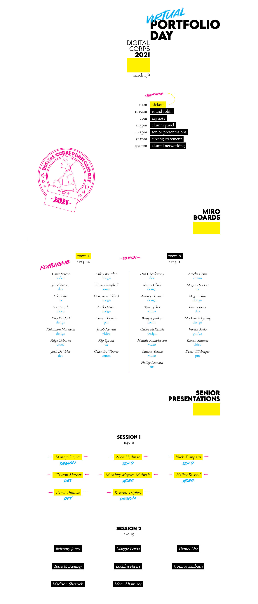

-
design
-
illustration
-
html/css
-
photography
- Photography
 Digital Corps Portfolio Day Program | Print
Digital Corps Portfolio Day Program | PrintCreated all print materials for the annual student portfolio event.
- Innovate WithIN identity | Print
Created the visual identity and art directed the annual high school entrepreneurship contest for the state of Indiana.
- Photography
- DOMA Coin Kiosk | Web design and development
Designed and coded an iPad (and later web) based interactive display to allow museum visitors to explore and learn about the museum’s extensive coin collection.
- Ball State Event Mailers | Print
Designed print event mailers for various Ball State activities.
 Photography
Photography Digital Corps identity | Identity
Digital Corps identity | IdentityCreated and managed all aspects of the identity for the Digital Corps and all related events.
- Photography
- Digital Corps Virtual Portfolio Day | Web design and development
Designed and built the 2020 virtual portfolio event website.
- Photography
 Ball State Advertisements | Print
Ball State Advertisements | PrintDesigned a series of print and magazine ads in support of the various colleges and alumni during the university’s centennial event.
 Digital Corps Event Materials | Print
Digital Corps Event Materials | PrintCreated virtually all print material related to the Digital Corps to be used in promotional events within and outside of the University.